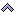
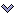
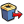

Cliqueando sobre el icono  aparece una caja de diálogo a la derecha de la figura. Esa caja de diálogo presenta en una lista todos los objetos creados, gráficos y no gráficos (cálculos)..
aparece una caja de diálogo a la derecha de la figura. Esa caja de diálogo presenta en una lista todos los objetos creados, gráficos y no gráficos (cálculos)..
Antes de la aparición de este cuadro de diálogo, los puntos o rectas de la figura que no ha sido nominados provisionalmente reciben un nombre para que la figura pueda ser descrita completamente.
Las flechas de izquierda permiten navegar por la lista de los objetos creados.
El objeto seleccionado en la lista, si es gráfico parpadea en la figura, así como objetos utilizados para su construcción.
Las flechas de la izquierda permiten navegar por la lista.
Las flechas de la derecha se usan para cambiar el orden relativo de los objetos:

: Sube el elemento seleccionado de a un paso hacia el comienzo de la lista de objetos creados. Si es necesario los objetos de los que depende también subirán.
: Desciende el elemento seleccionado de a un paso hacia el comienzo de la lista de objetos creados. Si es necesario los objetos de los que depende también bajarán. : Reposiciona el elemento seleccionado tanto como sea posible al comienzo de la lista de objetos creados.
: Reposiciona el elemento seleccionado tanto como sea posible al comienzo de la lista de objetos creados.
 : Reposiciona el elemento seleccionado tanto como sea posible al final de la lista de objetos creados.
: Reposiciona el elemento seleccionado tanto como sea posible al final de la lista de objetos creados.
Los otros iconos:
 : Elimina el elemento actual de la lista y así como los que de él dependen.
: Elimina el elemento actual de la lista y así como los que de él dependen.

: Elimina el elemento actual de la lista y así como los objetos siguientes. : Goma (máscara), oculta el objeto actual si está visible.
: Goma (máscara), oculta el objeto actual si está visible.
 : Cortina, deja visible el objeto actual si estaba oculto.
: Cortina, deja visible el objeto actual si estaba oculto.
 : Permite modificar el objeto actual si este objeto fue creado a través de una caja de diálogo (que es el caso para todos los objetos numéricos). Por ejemplo, si el objeto seleccionado es un punto imagen por una rotación, un cuadro de diálogo para modificar el ángulo aparecerá.
: Permite modificar el objeto actual si este objeto fue creado a través de una caja de diálogo (que es el caso para todos los objetos numéricos). Por ejemplo, si el objeto seleccionado es un punto imagen por una rotación, un cuadro de diálogo para modificar el ángulo aparecerá.
 : Asigna el color y estilo actual al objeto seleccionado
: Asigna el color y estilo actual al objeto seleccionado
Las casillas a marcar:
Objetos intermediarios: Si esta casilla está marcada, los objetos intermediarios de construcción aparecen en la lista. Esta casilla está desactivada por defecto.
Objetos ocultos visibles: Si esta casilla está marcada, los objetos ocultos quedan visibles (desactivada por defecto).
Las casillas a marcar :
Los objetos gráficos tienen una etiqueta que, por defecto, es una cadena de
caracteres vacíos.
Esta etiqueta se puede utilizar en la API de MathGraph32 o, por ejemplo, para insertar el código LaTeX de una visualización LaTeX ya definida en otra visualización LaTeX mediante el código LaTeX \Lat (específico de MathGraph32).
Para asignar una etiqueta a un objeto, se utiliza el botón Cambiar etiqueta.